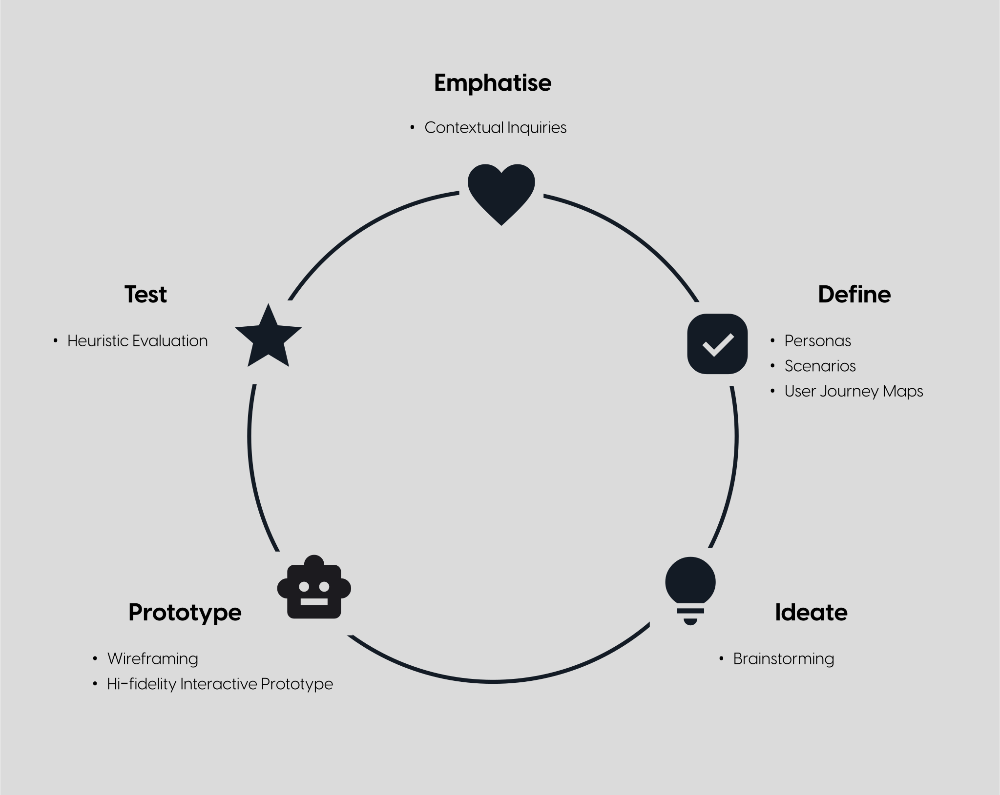
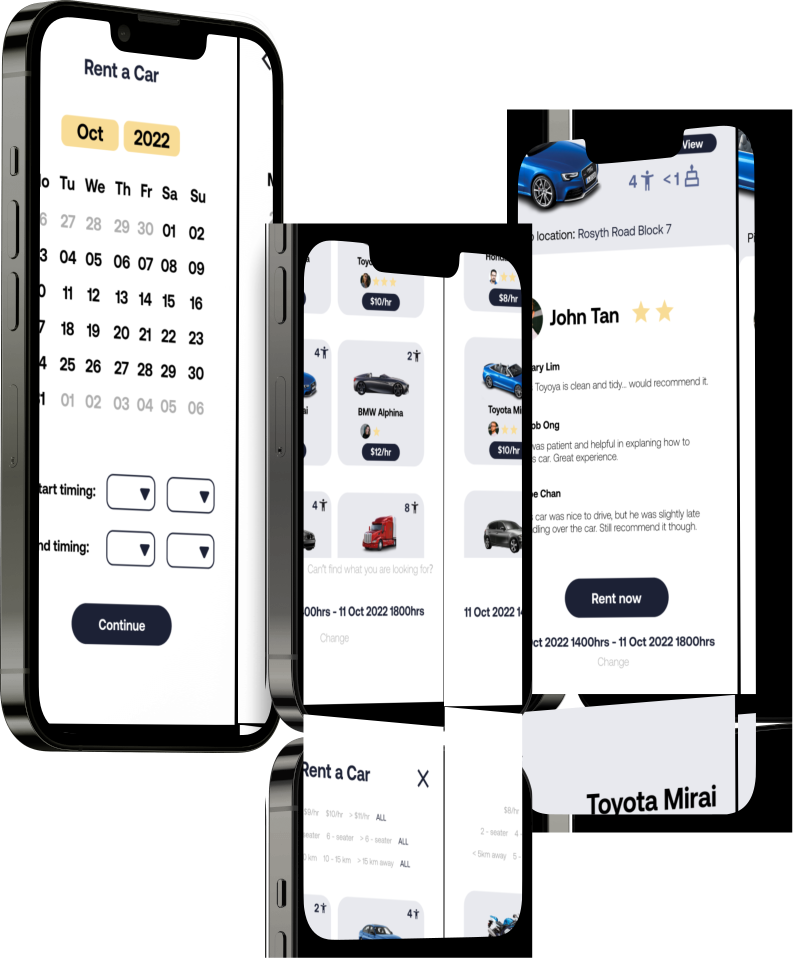

ShareCar
Sharing cars, has never been easier.


UX Design Project
Designed as a mobile application
Individual Design Exercise
Problem Statement
You are tasked to design a new mobile peer to peer car sharing system for users to rent out their cars to earn additional money during the period of time that their cars are not being used. You have to consider users' concerns of whether renters will take good care of their cars or not.
Design Approach
Contextual Inquiries
I interviewed my uncle and my friend who are potential users for such a car sharing system to better understand the concerns and needs from the perspectives of a car owner and a customer respectively. From the input I received, I devised 3 key user tasks that I want my design to achieve:
- To allow an owner to rent his car to trusted and reliable customers.
- To allow a customer to rent a car that is in good condition and whose owner is responsive to queries.
- To provide in app support for user issue resolution.
Personas
With the key user tasks in mind, I created three personas that are involved in each of the user tasks. The personas provide a human face to the context, encapsulating the interactions and behaviors that a user will take to complete the user tasks.

Jacob Loo
Owner

Joshua Low
Customer

Christine Lim
Customer Service
Brainstorming
Having identified the needs, wants, and pain points of key users in ShareCar via persona creation, I developed some preliminary ideas on the core features of the application, such as having a stars rating system and reward mechanism to promote good behavior amongst car owners and customers.
Scenarios and User Journey Maps
After brainstorming for ideas, I created scenarios and user journey maps to visualise how potential users such as my personas would interact with my preliminary ideas. This allows me to step into the shoes of users, identifying important intricacies and details that the high level ideas developed during brainstorming could have missed out.
Wireframing
Having completed the ideation stage, I proceeded to create a wireframe for my proposed features of ShareCar. The wireframe mockup will briefly showcase the user flow and core features of the application. For wireframing, I sketched out the design by hand.


Hi-Fidelity Interactive Prototype
With the wireframes completed, I created a hi-fidelity interactive prototype using Figma. You can view the prototype here.
Heuristic Evaluation
I did an internal round of heuristic evaluation to identify potential strengths and weaknesses of my prototype. I utilised Jakob Nielsen's Usability Heuristics for my evaluation. This allowed me to leverage on possible areas of improvements for my future projects as well.